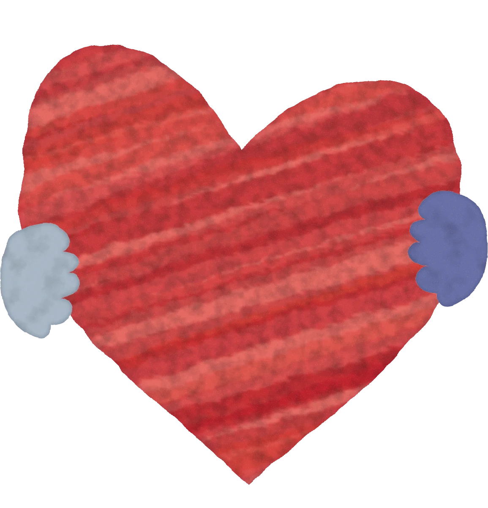
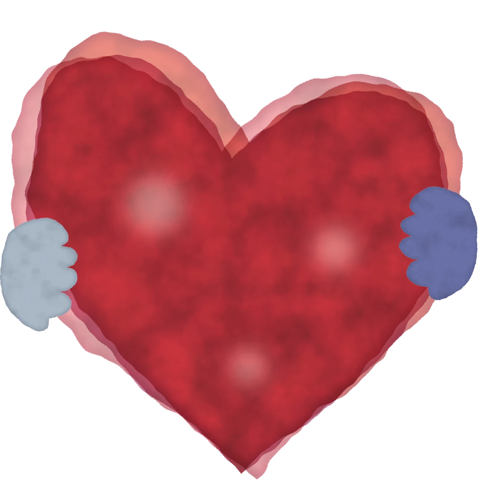

Tre udgaver af hjertet med struktur som vådt-i-vådt-akvarel. Hænderne er stadig klippet i papir, som på jeres håndlavede kort.
S + C
Bryllupsfest
Karmin, cinnober og rosa flyder sammen. Blød kant med lidt farve, der løber ud i papiret.

S + C
Bryllupsfest
Skrå, gennemsigtige penselstrøg lag på lag. Tættest på jeres håndlavede hjerte. Bruges lige nu på hjemmesiden og i tryksagerne.

S + C
Bryllupsfest
Tre gennemsigtige hjerter i rosa, cinnober og magenta lagt lidt forskudt oven på hinanden.